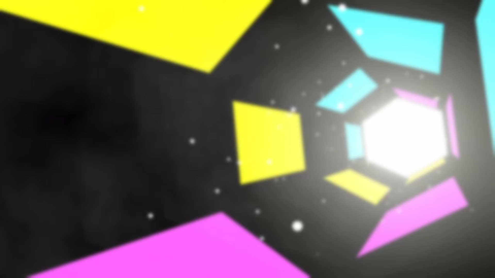
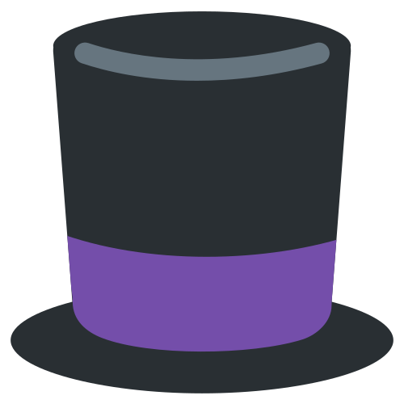
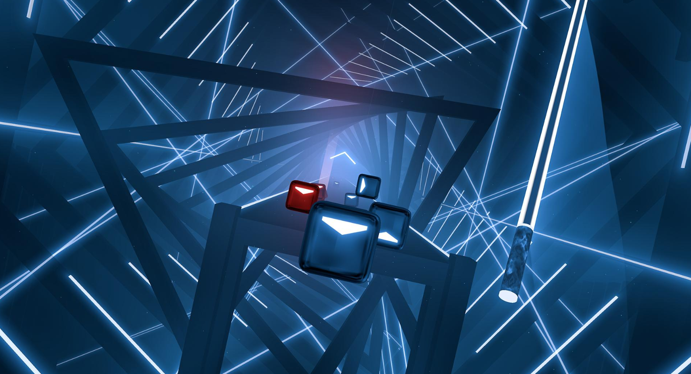
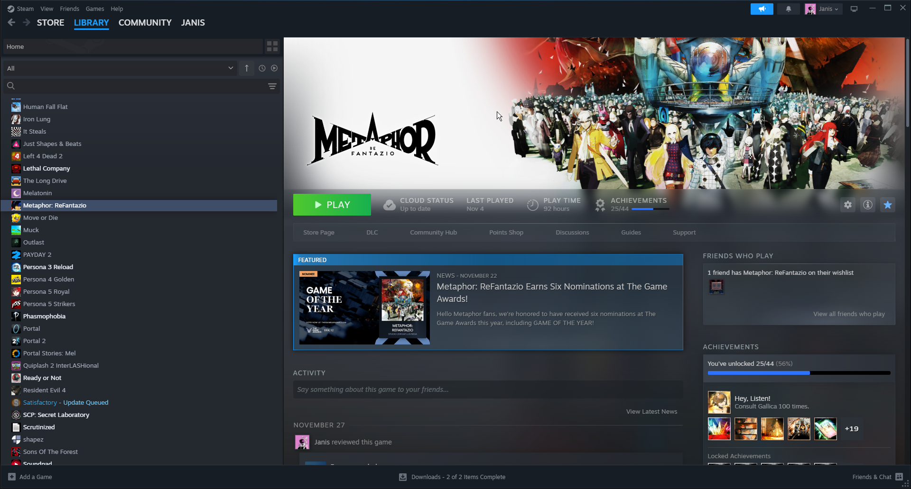
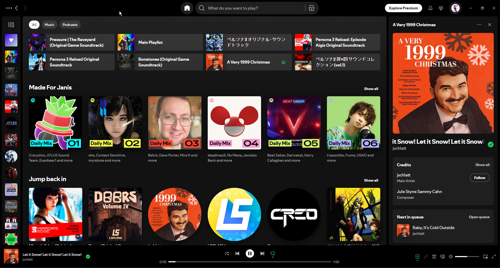

Projects
Here's a list of some things I've done!
Personal projects

School projects
- 
Work in progress
No project selected!
Try clicking one of the buttons to see some of my interesting (or not) projects!
projectname
type
description
Interests
Here are things I love doing on the side!

Beat Saber - the game that keeps shocking me
This one deserves its own category. Before this game I wasn't a big rhythm game fan or whatever. Though when I got my headset, everything changed as soon as I picked up this game. Ever since that moment I knew that I wanted to get better at this game - which started the cycle that still keeps on going. I've played Beat Saber for over 800 hours (Steam + Oculus standalone playtime combined) and have no signs of stopping, even if I neglect the game for long periods, I still come back to it.
Honestly my journey with this game was crazy. I sucked in the beginning - as is with any niche. But over the year up until now I've found my way. Nowadays I'm mostly focused on improving my stamina and sometimes accuracy, though I really want to get into challenge maps.
I'm currently sitting in 3rd place in Latvia and almost 2000th place globally on both massive leaderboard services used in the community.
Here are my profiles:
Here's a comparison between my gameplay in 2021 and 2024:
(more available on the same channel with these videos)
2024
2021
Beat Saber

Gaming - the catalyst of life
Games have been a huge part of my life, hence why I chose game development as my hobby. Surprisingly, I'm really good at balancing my life and games, and neither have been in the way of each other. Though I'll say that games have influenced me quite a lot and shaped me as a person (not in a bad way whatsoever if you know me personally).
I have a lot of games - VR games, JRPGs, Turn-Based, Shooters, Survival and generally just a lot of genres all around.
Some favourites of mine are:
- Metaphor: ReFantazio
- Persona 3, 4, 5
- Bonelab, Boneworks
- Beat Saber
- Spooky's Jumpscare Mansion, Doors (Roblox), Pressure (Roblox)
- Half-life series, Portal series, Garry's Mod
- Into the Radius 1, 2
- Baba Is You
- Satisfactory
- Barotrauma
- Dying Light 1, 2
- Forest, Sons of the Forest
- Detroit: Become Human
- Buckshot Roulette
- Lethal Company, The Upturned, It Steals
- Phasmophobia
- and many others...
Gaming

Music - the feeling of serenity
I love music. I love listening to music and getting inspired by it. I love attempting to at least try to compose something sensible, so I can express myself clearly (I haven't actually composed any proper track. I'm still trying.). Music is one of the best things to fall upon this world.
I have a mixed variety of songs - my main playlist literally contains about 3000 songs! That's insanity for me.
I can list a few of my favourite albums and songs though.
Here they are in no particual order:
- A Very 1999 Christmas - jschlatt [Album]
- Mirror's Edge (Original Videogame Score) - Solar Fields [Album]
- Pressure (OST Vol. 1 and The Raveyard) - NoLongerNull [Albums]
- Metaphor: ReFantazio Soundtrack - ATLUS Sound Team [Album]
- Doors (Original Game Soundtrack Vol 1. - 4.) [Albums]
- Persona 3 and Persona 3 Reload (Original Soundtrack) + Episode Aigis - ATLUS Sound Team [Albums, Compilation]
- World Gone Mad, Made Of Steel, In The Dark, Ritual, Dust - BattleJuice [Songs]
- Bonetones (Original Game Soundtrack) - Michael Wyckoff [Album]
- LAB JAMS: The Bonelab Original Game Soundtrack - Michael Wyckoff [Album]
- Flood Escape 2 Part 1, 2 (Complete Original Soundtrack) - Crazyblox, etc. [Albums]
- PERSONA5 ORIGINAL SOUNDTRACK - ATLUS Sound Team
- Persona 4 Original Soundtrack - ATLUS Sound Team
- and infinitely more songs that I won't list here - my music taste is very variable...
Music